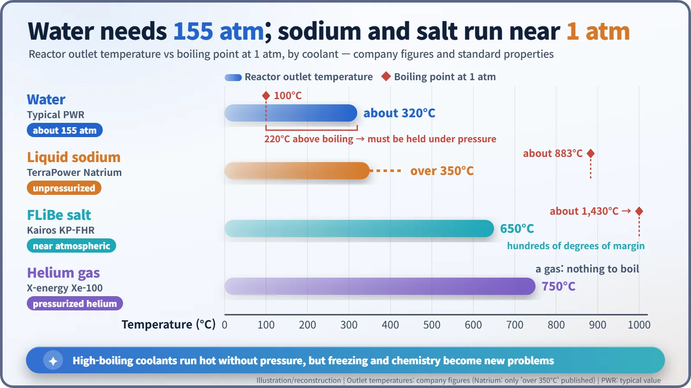
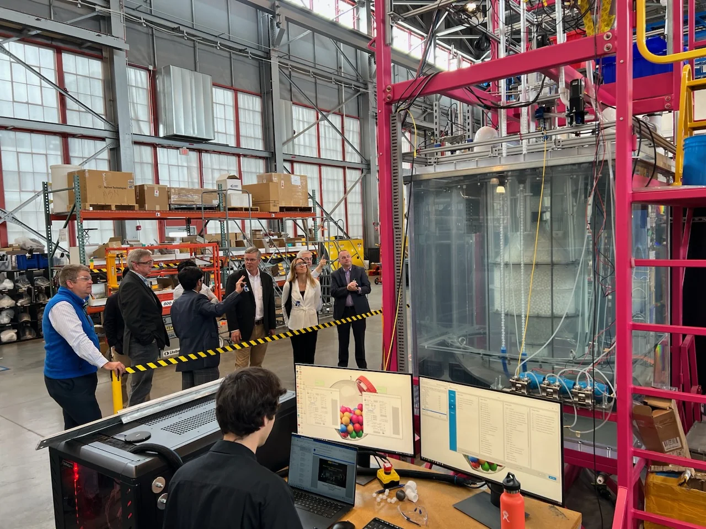
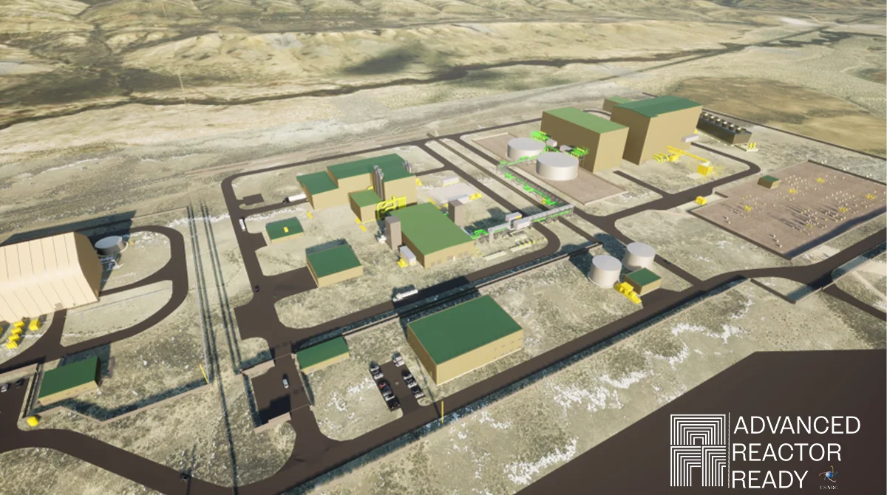
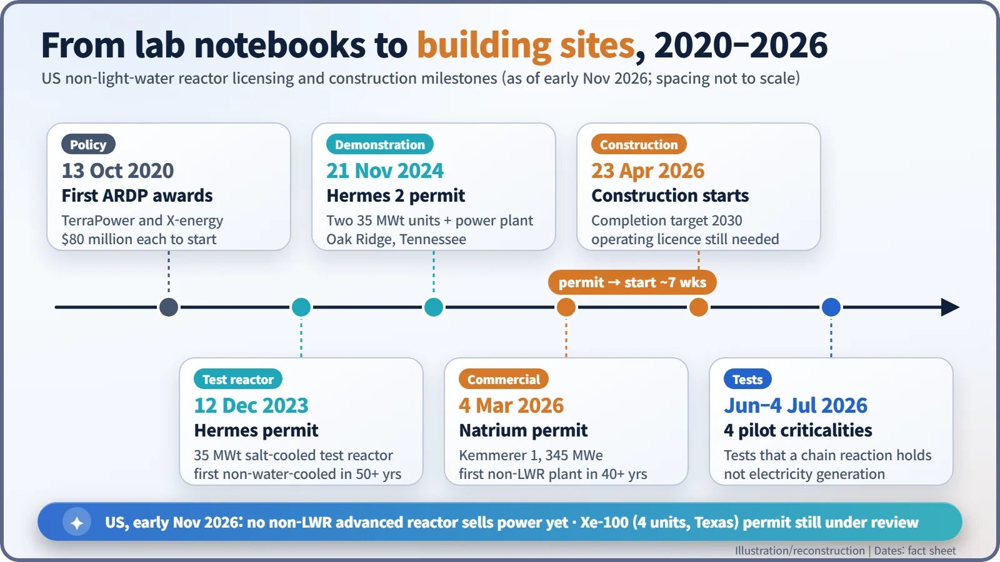

Nuclear History · 288
Beyond Water: Natrium, Kairos and the Return of Advanced Reactors
Light-water reactors are giant pressure cookers; advanced reactors swap water for sodium, molten salt or helium, and between 2023 and 2026 the first ones won US construction permits.
Most nuclear plants are giant pressure cookers that keep water from boiling at about 155 atmospheres. Advanced reactors swap water for liquid sodium, molten salt or helium, ideas first tested in the 1960s. Between 2020 and 2026 those ideas moved from lab reports to US construction permits: Kairos Power's Hermes test reactor in 2023 and TerraPower's Natrium power plant in 2026. As of November 2026, none is yet selling electricity.
A pressure cooker the size of a power plant
Think of a pressure cooker. Lock the lid, let the pressure build, and water can sit well above 100°C without boiling. Most of the world's nuclear power plants are, at heart, giant pressure cookers. A pressurized water reactor (PWR) keeps its cooling water at roughly 155 atmospheres so that it can run at about 320°C without boiling. Water is cheap and well understood, but the price is a thick steel vessel and piping built to hold that pressure.
So why not choose a coolant that simply doesn't boil at those temperatures? The question is not new. In the 1960s the United States had already run EBR-II, cooled by liquid sodium; the Molten-Salt Reactor Experiment (MSRE) at Oak Ridge, with molten salt flowing through it; and the helium-cooled Peach Bottom high-temperature gas reactor. Light-water reactors won the commercial race, and these ideas sat in lab reports for decades. In the 2020s the drawer was opened again.

No boiling, but new homework
The key is the margin between operating temperature and boiling point. Sodium boils at about 883°C. FLiBe, a molten mixture of lithium fluoride and beryllium fluoride, boils at about 1,430°C. Both can run hot at close to atmospheric pressure, and hotter coolant means more efficient electricity generation. Helium is a gas, so there is nothing to boil at all.
There is no free lunch. Sodium reacts vigorously with water and air and has to be sealed off carefully. FLiBe freezes below about 459°C, so it must be kept warm. Helium carries heat less well than a liquid, so it is pressurized and pushed through fast. Advanced reactors are not reactors without problems; they are reactors that chose a different set of problems from water-cooled ones.
Old lab notes meet a budget line
On 13 October 2020, the US Department of Energy (DOE) named the first two projects of its Advanced Reactor Demonstration Program (ARDP): TerraPower, founded in 2006 by Bill Gates (born 1955), and X-energy, which designs a helium-cooled reactor. Each received $80 million in initial funding, with costs split 50:50 between government and industry and the aim of having a working reactor within seven years. [6]
The first company through the regulator's door, though, was Kairos Power, founded in 2016. On 12 December 2023 the Nuclear Regulatory Commission (NRC) voted to issue a construction permit for Hermes, a 35-megawatt-thermal test reactor in Oak Ridge, Tennessee. Hermes is cooled by FLiBe and fuelled with coated TRISO particles packed into graphite pebbles. It was the first non-water-cooled reactor approved for construction in the United States in more than 50 years. Hermes does not make electricity, so in November 2024 a separate permit followed for Hermes 2: two reactors sharing a power-generation system. [4] [5]
The fuel itself is rather charming: golf-ball-sized pebbles that move slowly through the core, with spent pebbles taken out and fresh ones added as the reactor runs. The transparent vessel in the photo below is packed with white pebbles too. [8]

A sodium reactor next to a coal town
Among commercial power plants, TerraPower's Natrium crossed the line first. Kemmerer Unit 1, near a coal-fired power station in Kemmerer, Wyoming, pairs a 345 MWe sodium-cooled fast reactor with tanks of molten salt that store heat, letting output rise to 500 MWe when needed, for about 5.5 hours according to published figures. Think of it as a reactor with a giant thermos flask: the reactor runs steadily while the grid, now full of solar and wind, gets power when it wants it.
The NRC finished a review it had scheduled for 27 months in 18. On 4 March 2026 the Commission unanimously approved the construction permit, the first for a commercial non-light-water reactor in more than 40 years. "This is the first commercial-scale, advanced nuclear plant to receive this permit," said TerraPower's chief executive, Chris Levesque. Full construction began on 23 April 2026, with completion targeted for 2030. [1] [2] [3]

X-energy's Xe-100 (80 MWe, helium leaving the core at 750°C) is under review for four units at a Dow chemical plant in Texas; the NRC completed its final safety evaluation in October 2026, but as of early November the Commission's permit decision was still pending. The government pushed the pace as well. A May 2025 executive order set a goal of three test reactors reaching criticality by 4 July 2026, and DOE announced that four had done so by that date. These were very low-power tests that confirm a chain reaction can sustain itself, not the start of electricity generation. [7] [8] [9]

The distance between a permit and a power line
Words matter here. "First non-water-cooled permit" means Hermes if you count test reactors and Natrium if you count commercial power plants. And a construction permit is not an operating licence. As of November 2026, no non-light-water advanced reactor is selling electricity in the United States.
Hurdles remain. Natrium and the Xe-100 use high-assay low-enriched uranium (HALEU, enriched to just under 20% uranium-235), and the only established commercial supplier was effectively Russia, which turned fuel supply into a major problem after 2022. The cost and schedule of the first units will only be known once they are built. Around the same time, China put a helium-cooled pebble-bed reactor into commercial operation and the United States certified its first small modular reactor design. Ideas tested in laboratories half a century ago are now being put to the test on real sites.